ユニティちゃんトゥーンシェーダーマニュアル
2016/09/06 Nobuyuki Kobayashi (Unity Technologies Japan)
【ユニティちゃんトゥーンシェーダーとは？】
「ユニティちゃんトゥーンシェーダー」は、セル風3DCGアニメーションの制作現場での要望に応えるような形で設計された、映像志向のトゥーンシェーダーです。
各設定は、「トゥーンシェーダーとしての綺麗さ」を最優先で設計されていますので、ゲーム等に使用する場合には、各パーツのライトカリング等の設定を必要に応じて見直してみてもよいでしょう。
なおセル風3DCGアニメーションの制作現場向けの設計になっていますので、いわゆる「影」は色設計担当者が作成しやすいような「影色設定」を使う方式であり、かつ各パーツの形状（フォルム）を強調する「影」や、キャラクターのデザイン上、光源の位置や強さとは関係なく、必ず必要となる「影」が出しやすいように設計されています。
一方、セル風3DCGアニメーションではほぼ使用されない、「セルフシャドウ」には対応していませんので、その点はご留意ください。
【開発環境】
ユニティちゃんトゥーンシェーダーは、Unity5.3+ShaderForge v1.27で開発されています。
【ターゲット環境】
ShaderForge側で以下のように設定してあります。必要に応じて変更してください。
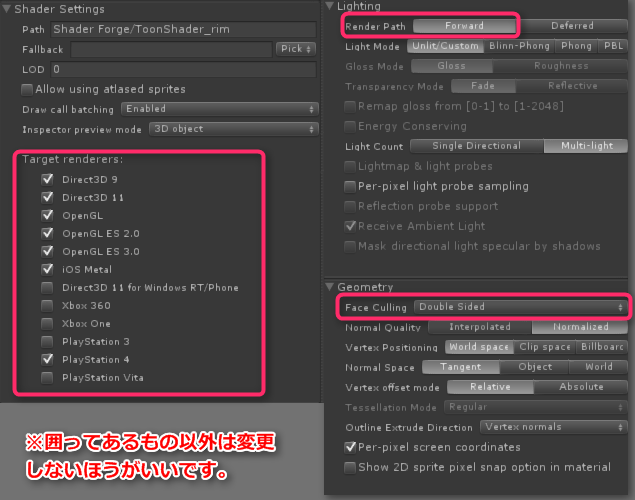
【シェーダーの特徴】
ユニティちゃんトゥーンシェーダーは以下のような特徴をもっています。
- アウトラインの入り抜き調整は、テクスチャで指定可能
- 必ず影にしたい場所をテクスチャで指定可能
- ノーマル色と影色の混合部のぼけ足を調整可能
- ライトの位置を変えずに影色の支配域を変更可能
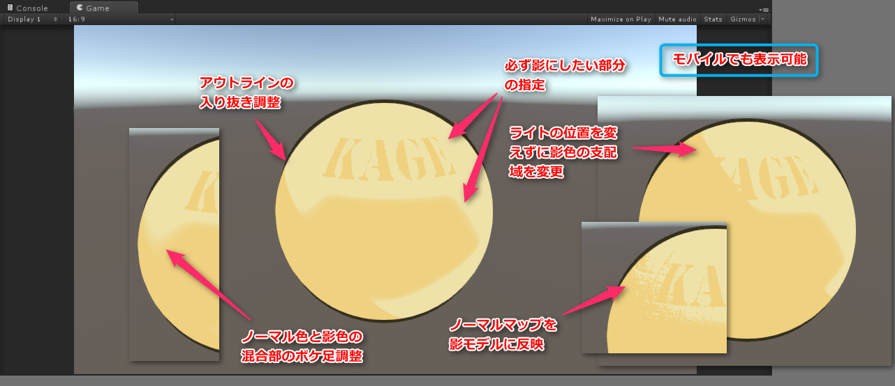
【サンプルシーン】
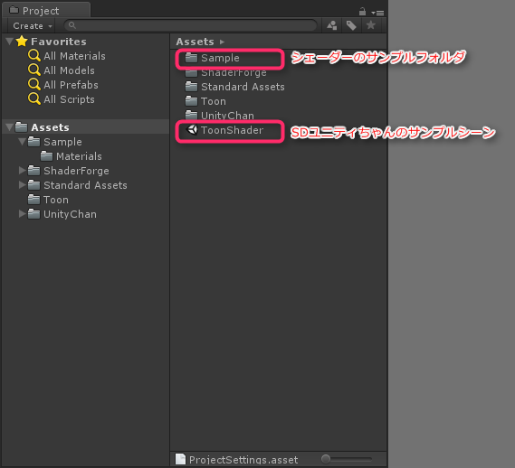
【プロジェクトの初期設定】
File>Build Settings>Olayer Settings... より
Rendering Path⇒Forward
Color Space⇒Linearを推奨
（※もしプラットフォームの制約でGammaスペースを使う時には、LightingウィンドウよりAmbient Colorを調整することでカラー調整をすること）
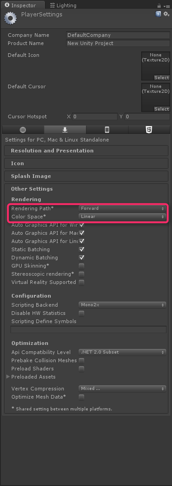
パーツごとにディレクショナルライトを使い分ける（ライトリンキングをする）場合には、必要な数のレイヤーを準備すること。
以下にライトリンキングの例を示す。
この例では、Directional Light_MainLightは、レイヤーMainLightに属するメッシュしか照らさなくなる。
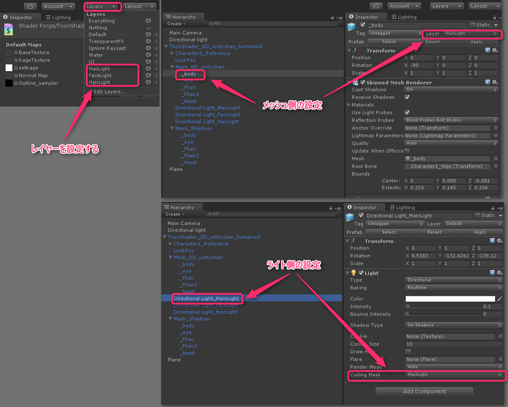
【シェーダーノードを開く】
ShaderForgeがインポートされている場合には、Assets/Toon内のToonShadr.shaderをProjectウィンドウで選択し、「Open in Shader Forge」ボタンをクリックすることで、シェーダーノードが開く。
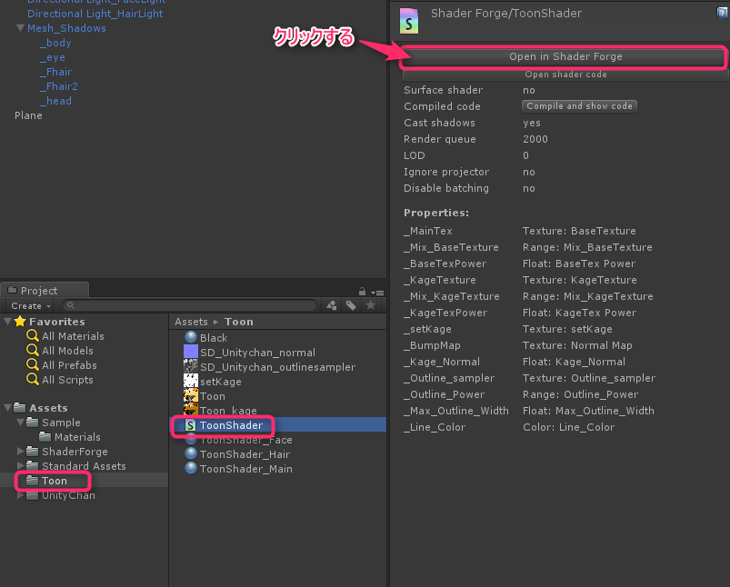
トゥーンシェーダーには以下の３種類があります。基本操作は同じです。
- ToonShader.shader
- ToonShader_rim.shader（リムライト追加版）
- ToonShader_rim_matcap.shader（リムライト＋MatCap追加版）
【トゥーンシェーダーの各プロパティ解説】
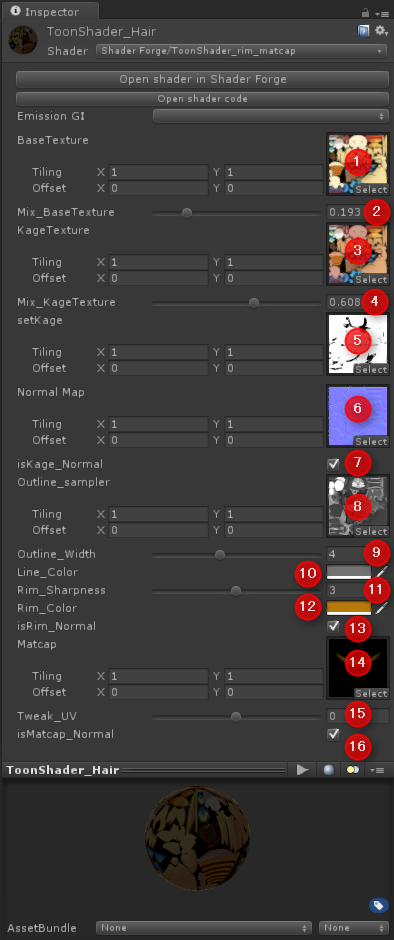
トゥーンシェーダー共通プロパティ
１：BaseTexutre：通常色のテクスチャを設定
２：Mix_BaseTexture：通常色の支配範囲を指定
３：KageTexture：影色のテクスチャを設定
４：Mix_KageTexture：陰色の支配範囲を指定
５：setKage：必ず影を落としたい部分を黒で指定するサンプラーマップを設定（黒100％で陰色100％になる）
６：Normal Map：ノーマルマップを設定
７：isKage_Normal：ノーマルマップが設定されている場合、ノーマルマップを影モデルに反映させるか指定（チェックありで反映させる）
８：Outline_sampler：アウトラインの入り抜きを指定するサンプラーマップを設定（黒でアウトラインなし、白で太さ最大）
９：Outline_Width：アウトラインの幅を指定
１０：Line_Color：アウトラインのカラーを指定（通常色テクスチャとミックスされる）
リムライトの追加プロパティ
１１：Rim_Sharpness：リムライトのシャープネス設定
１２：Rim_Color：リムライトのカラー指定（HDR対応）
１３：isRim_Normal：リムライトをノーマルマップに反映させるか指定
Matcapハイライトの追加プロパティ
１４：Matcap：Matcapの設定
１５：Tweak_UV：MatcapのUV微調整
１６：isMatcap_Normal：Matcapをノーマルマップに反映させるか指定
【通常色と影色の混合部のぼけ足の調整の仕方】
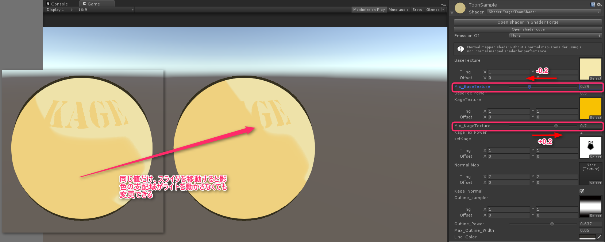
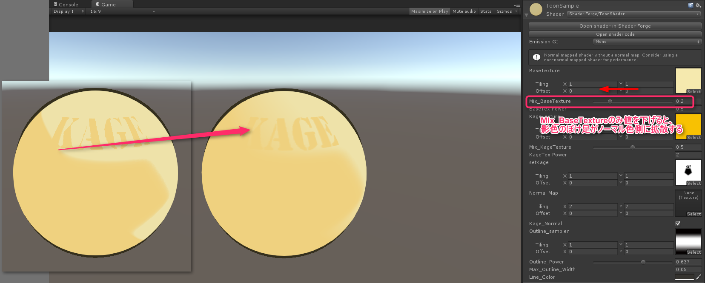
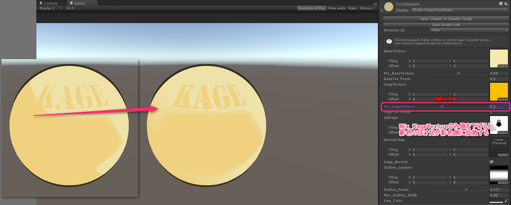
※ちなみに「Mix_BaseTextureの値＋Mix_KageTextureの値＝１」となるような値を入れると影モデルが完全に反転するので、それを境に各スライダーを動かすことで、ランプシェーダーに近いパッキリとノーマル色と影色が分かれる値を探ることをができる。それをうまく使うと影の反転もできる。
【アウトラインサンプラーに使用するテクスチャについて】
黒でラインなし、白でラインの幅が100%になります。
適宜アウトラインサンプラーを設定することで、アウトラインに入り抜き（強弱）が発生します。
アウトラインサンプラーは、キャラごとにある程度パーツのUVを共通化することで、汎用的に入り抜きの制御ができるようになります。
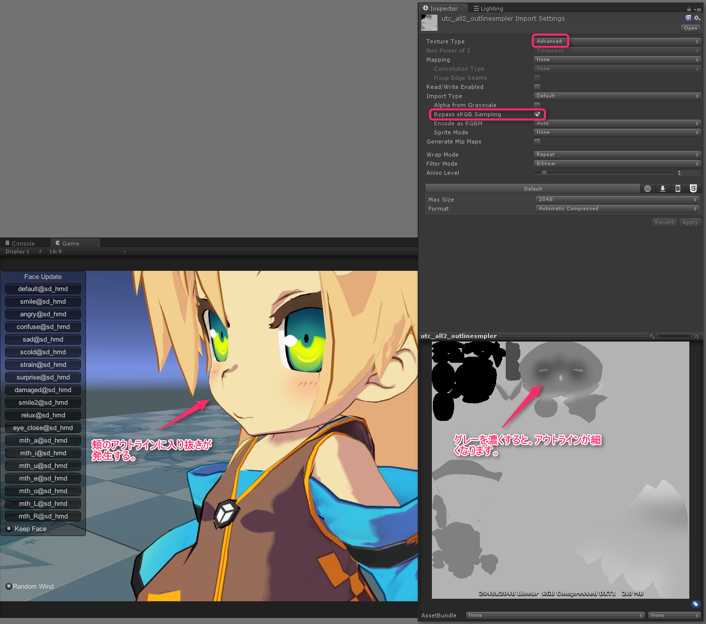
【必ず影を落としたい部分の指定するsetKageテクスチャについて】
ライティングと関係なく影を落としたい部分をsetKageテクスチャで指定できます。
各シーンごとの特殊な影や、演出上追加したい影などがある場合、ライティングに加えて追加できます。
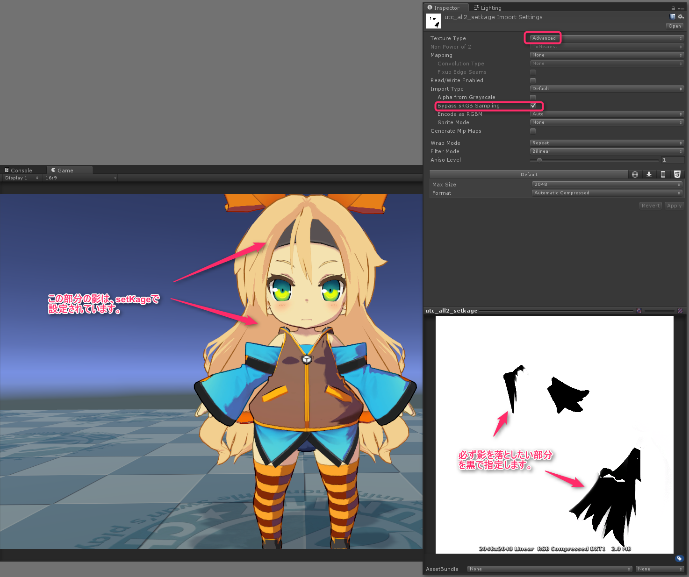
※3Dペインターを使って、影位置を指定してもよい。
【Mesh_Shadowsグループの設定について】
トゥーンシェーダー用のディレクショナルライト以外に、メインライトの影を落とすためにMesh_Shadowsグループを設定します。
これはメッシュグループMesh_SD_unitychanをデュプリケートし、Skinned Mesh Renderer内のCast ShadowsをShadows Onlyに設定したもの。
（ライトリンキングについてもご確認ください）
影を落とす必要がないならば設定しなくてもかまいません。
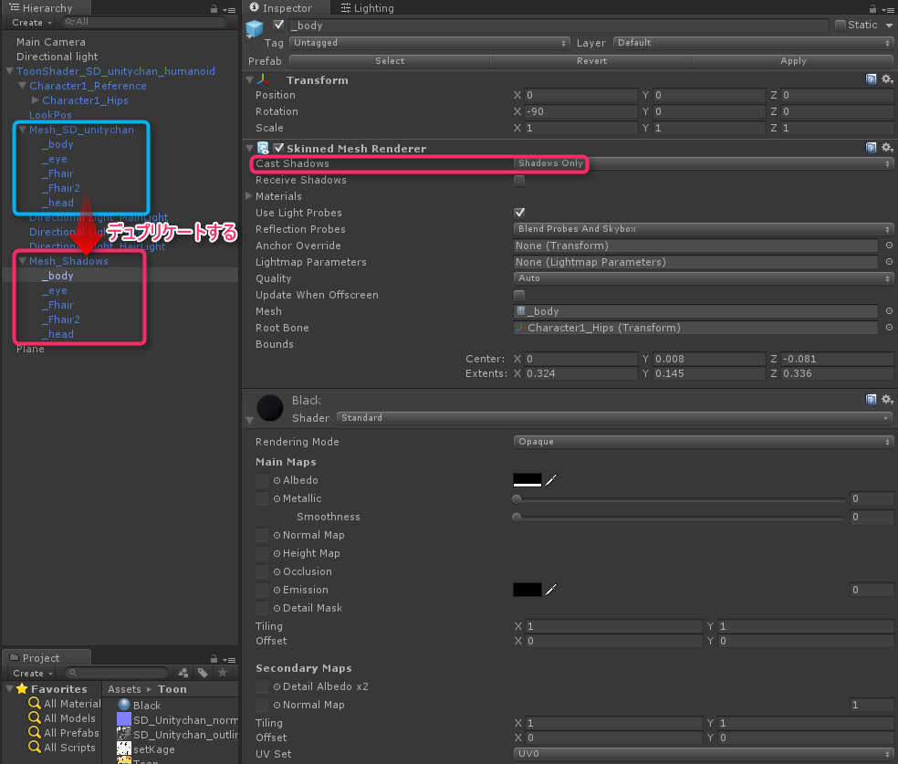
【AmbientColorを使ったカラー調整】
トゥーンシェーダーは、LightingウィンドウのAmbient Source⇒Color、Ambient Colorの影響を受けます。
AmbientColorを使って、シーン全体のカラーにトゥーンシェーダーを馴染ませたり、リニアスペースカラーとガンマスペースカラーのカラーイメージの違いをある程度吸収したりすることができます。
【イメージエフェクト（ポストエフェクト）について】
イメージエフェクトは、Main Cameraにアタッチされています。順番が重要なので、下を参考にしてください。
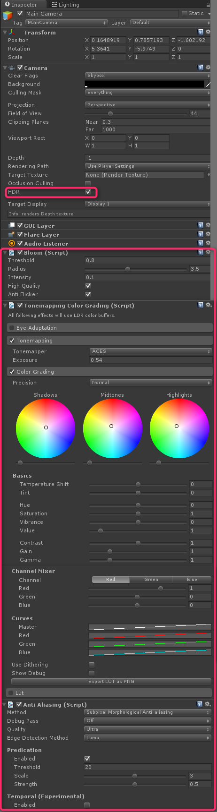
【映像（プリレンダー）での使用】
プリレンダーで使用する場合には、イメージエフェクト側につけているAnti Aliasingは外して、フレームキャプチャで4K出力をしたものを使用サイズに縮小して使うほうが綺麗な可能性が高いです（事実上のスーパーサンプリング）。
フレームキャプチャは以下で提供されています。
フレームキャプチャの出力結果は、NUKEやAfterEffectsで利用できます。
他、Alembic Importer/Exporterがあるので、映像用にはこちらも使うとよいでしょう。
【WebGLでの使用】
ガンマカラー設定で使用することで、WebGL上で動くことを確認しています。
WebGL上で使用する場合、ポストエフェクトの多くが使えませんのでご注意ください。
【ライセンスについて】
「ユニティちゃんトゥーンシェーダー」は、UCL2.0（ユニティちゃんライセンス2.0）で提供されます。
ユニティちゃんライセンスについては、以下を参照してください。